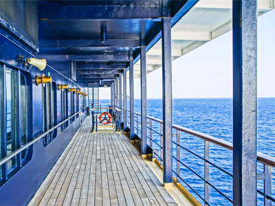

사회 공헌
적극적이고 지속적인 사회공헌활동을 통해 상생의 가치를 실천하고 모범기업시민으로서의 책임을 다하고 있습니다
사회 공헌 슬로건

사회공헌의 중요성과 필요성을 인식하고, 사회공헌활동에 대한 전 임직원들의 관심과 자발적인 참여 유도를 위해 선정된 슬로건으로 사회공헌 캘린더, 봉사단 조끼 제작 등에 다양하게 쓰이고 있습니다
DSME 사회 봉사단
DSME는 희망 90’S라는 경영 혁신 운동의 일환으로 1993년 임직원을 중심으로 사회봉사단을 발족, 여러 분야에서 활발하게 봉사활동을 한 바탕으로 2003년 5월9일 “DSME사회봉사단”을 창단했습니다.
-
- 대외 협력부
- - 긴급 재난 구호활동
- - 복지시설 지원
-
- 자원 봉사단
- - 독거노인 여행지원
- - 보육시설 아동 지원
-
- 사랑 복지회
- - 극빈세대 생활비 지원
- - 극빈세대 주거환경 개선
-
- 기술 봉사회
- - 소외계층 주거환경 개선
- - 긴급 재난 구호활동
-
- 새싹 소리회
- - 백혈병 환아 후원
- - 새 생명 바다축제 개최
-
- 희망 봉사단
- - 복지시설 급식봉사
- - 복지시설 목욕봉사
DSME 사회 봉사 활동
DSME 사회봉사단은 기업 문화 그룹을 중심으로 사무국을 구성, 사내에서 자생적으로 활동하고 있는 여러 봉사단체 및 사회봉사단의 각종 봉사활동을 적극 지원하고 있습니다

- DSME 바다식목일
- 2014년 10월9일 거제 일운면 지세포리 해안 일대에서 바다녹화현상 예방과 해안정화를 위해 제1회 DSME바다식목일 행사를 개최하였습니다. ‘조선해양회사’로서 해양자원 오염에 대한 사회적 책임을 다하기 위해 신설한 사회공헌 프로그램이며, 정부가 주도해 온 바다식목일을 기업이 나서 추진하게 된 최초의 사례이기도 했습니다.
- 우리동네 愛 프로젝트
- 2014년 11월 15일 장목면 일대에 모인 300여명의 임직원들은 추운 날씨에도 불구하고 이웃들을 찾아 즐거움과 따뜻함을 전하며 하나된 시간을 보냈습니다. 아이들이 마음껏 뛰어 놀 수 있도록 학교시설물을 보수하며 구슬땀을 흘렸습니다. 또, 지역 곳곳의 환경정화와 황포벽 벽화그리기를 통해 마을 외관을 아름답게 조성하였습니다.
- 다솜일촌
- 거제지역 노인복지 향상을 위한 1사1경로당 결연 운동인 ‘다솜일촌’은 사랑이란 의미의 순한글 ‘다솜’과 한 마을 또는 가장 가까운 촌수라는 의미의 1촌(寸)을 합친 합성어 입니다. 현재 31개의 경로당과 결연을 맺고 있으며 11월 한 달간은 결연마을 어르신들을 초청하여 야드투어를 진행하고 식사를 대접했습니다.
- 천사(1004)기부
- 당사는 노사합동 연말 불우이웃돕기 모금행사로 모은 1억6천여만 원의 성금을 천사기부는 희망 임직원에 한해 매월 급여의 ‘1,004원’을 공제하고 모인 금액만큼 회사도 함께 기부하는 1대1 매칭그랜트 제도를 시행하고 있습니다.